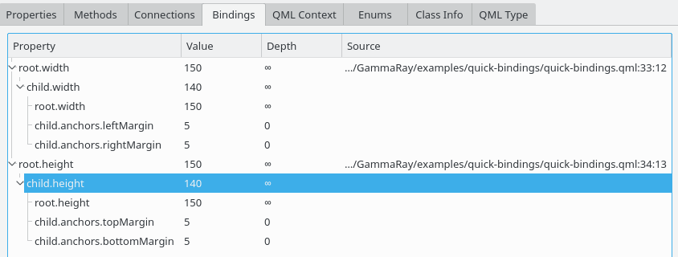

The bindings view is available for all QObject instances instantiated from QML and shows active property bindings for the selected object, including their dependencies on other properties.

At the top level, the binding view shows all QML property bindings of the currently selected object. Below each bindings, its dependencies are shown, which themselves can be property bindings again. Dependencies can be explicit, that is they are specified in your code, or implicit. Implicit dependencies will not show a corresponding source code location and are mainly introduced by the Qt Quick layouting system.
The displayed information include: